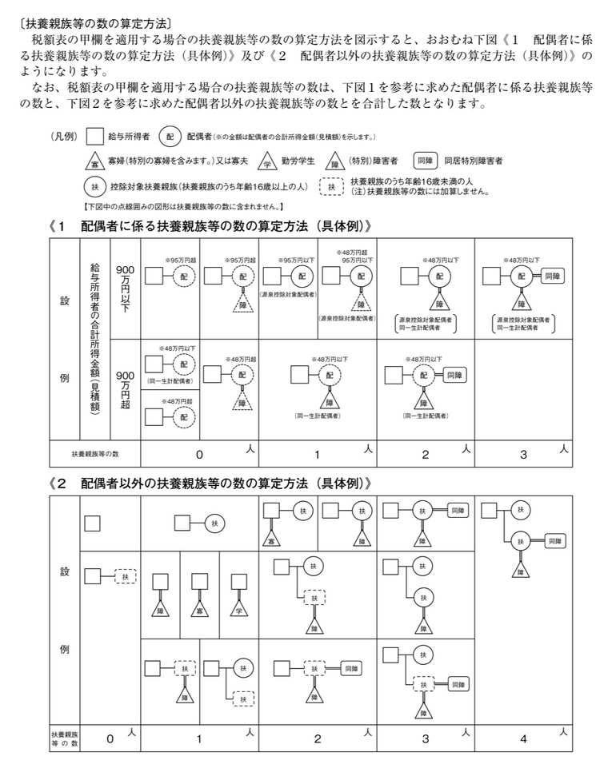

Employee Master
※ ここで登録した情報（雇用形態・扶養人数・基本給・所定労働時間など）は、勤怠集計と給与・賞与計算で自動的に使用されます。健康保険・厚生年金・雇用保険の保険料率は会社マスタ管理で設定します。
※ 入力していただいた情報は、お使いのブラウザ内（localStorage）にのみ保存され、外部のサーバーへ送信・保存されることはありません。
※ 氏名を日本語入力（IME）で変換すると自動でフリガナが入力されます。正しく入らない場合は直接修正してください。
※ 割増賃金の基礎となる賃金から除外できる手当は、法定で限定的に定められています。
① 家族手当 ② 通勤手当 ③ 別居手当 ④ 子女教育手当 ⑤ 住宅手当 ⑥ 臨時に支払われた賃金 ⑦ １か月を超える期間ごとに支払われる賃金

※ 健康保険・厚生年金・雇用保険の保険料率は、全従業員共通の設定として会社マスタ管理で設定してください。
※ 月平均所定労働時間 = (365日または閏年366日 － 年間休日日数) × 1日の所定労働時間数 ÷ 12ヶ月)
※ 残業手当・欠勤控除は、勤怠管理画面の月次集計値と上記設定から給与計算画面で自動算出されます（給与計算画面で個別に上書きも可能）。
| 氏名 | 雇用形態 | 基本給 | 操作 |
|---|